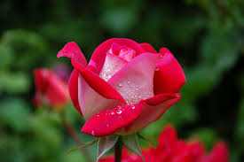
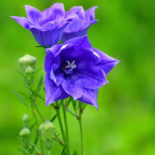
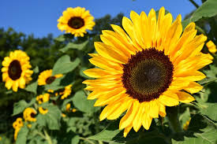

roseA rose is either a woody perennial flowering plant of the genus Rosa in the family Rosaceae or the flower it bears.
 Tulip
Tulip
The tulip is a member of the lily family, Liliaceae, along with 14 other genera, where it is most closely related to Amana, Erythronium, and Gagea in the tribe Lilieae. Tulip. Tulipa gesneriana. Scientific classification.

nargishthe "Nargis" flower is commonly known as a daffodil or a narcissus. These flowers are part of the same genus (Narcissus) and are often used interchangeably.

sunflowerSunflowers bloom at sunrise and keep blooming for a long time and beautifying the garden. Its flowers also give a good glow to the vase.